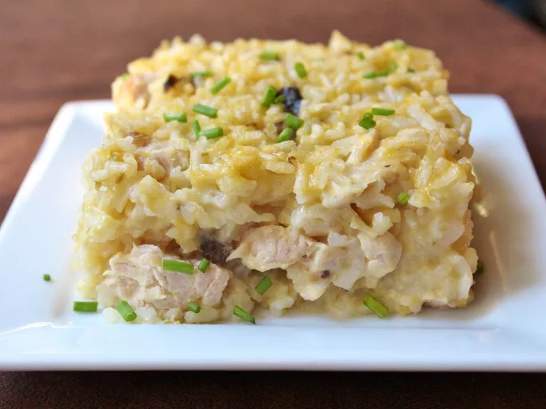

Nasi Goreng Mamaw

Saya tumbuh besar dengan resep casserole ayam dan nasi ini. Nenek saya
mendapatkannya dari seorang wanita dari gereja di acara makan bersama
dahulu kala! Dia mewariskannya kepada ibu saya dan ini selalu menjadi
favorit keluarga.
Cepat dan mudah untuk malam sekolah, dan sisa makanannya juga sama
lezatnya! Anda tentu saja dapat menggunakan lebih sedikit mentega di
atasnya, Ibu dan Mama saya selalu menaruh seluruh batang di atasnya (harus
suka wanita Selatan dan mentega mereka!)
Bahan - bahan:
- 3 dada ayam, potong dadu
- 2 gelas air
- 2 gelas nasi putih instan
- 1 kaleng (10,5 ons) krim sup ayam
- 1 kaleng (10,5 ons) krim sup seledri
- 1 kaleng (10,5 ons) krim sup jamur
- garam dan lada hitam bubuk sesuai selera
- ½ gelas mentega, potong-potong
Langkah - langkah pembuatan
-
Kumpulkan semua bahan. Panaskan oven hingga 400 derajat F (200 derajat
C). Olesi sisi dan dasar loyang casserole dengan minyak.
-
Bahan-bahan untuk casserole ayam dan nasi di atas permukaan marmer,
termasuk ayam, nasi, mentega, dan saus krim.
-
Dotdash Meredith Food Studios Aduk ayam, air, nasi, krim sup ayam, krim
sup seledri, dan krim sup jamur bersama-sama dalam loyang casserole yang
sudah disiapkan; bumbui dengan garam dan merica.
-
Bagian atas bahan casserole ayam dan nasi ditaruh dalam loyang tanpa
diaduk.
-
Dotdash Meredith Food Studios Atur mentega secara merata di atas
campuran ayam.
-
Bagian atas campuran casserole ayam dan nasi ditaruh dalam loyang dengan
potongan mentega di atasnya.
-
Dotdash Meredith Food Studios Panggang dalam oven yang sudah dipanaskan
hingga nasi empuk dan ayam matang, 1 jam hingga 75 menit.
-
Bagian atas casserole ayam dan nasi panggang dalam loyang. Dotdash
Meredith Food Studios Dinginkan 10 hingga 15 menit sebelum disajikan.
Selamat menikmati!
Halaman Utama